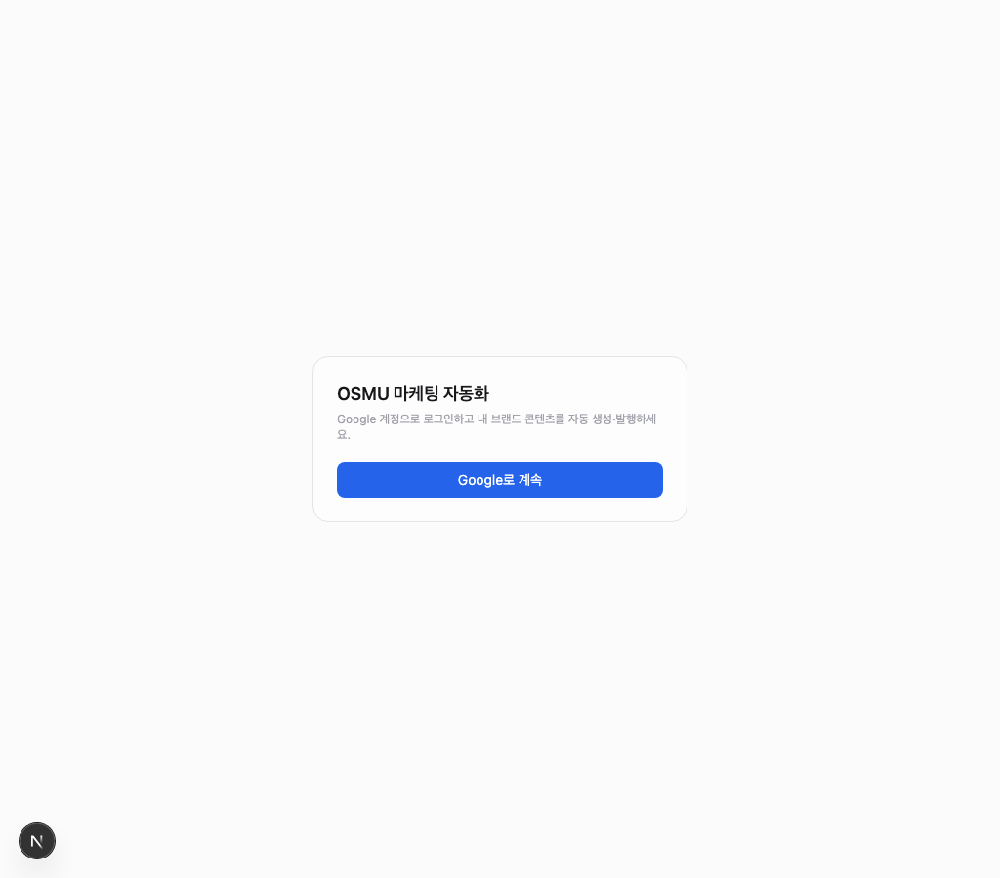
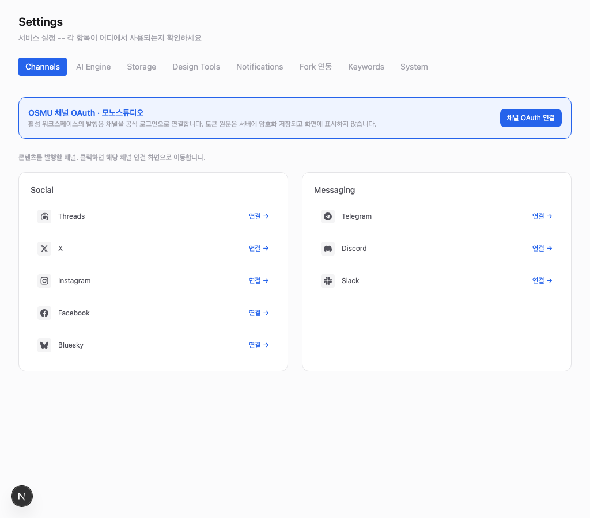
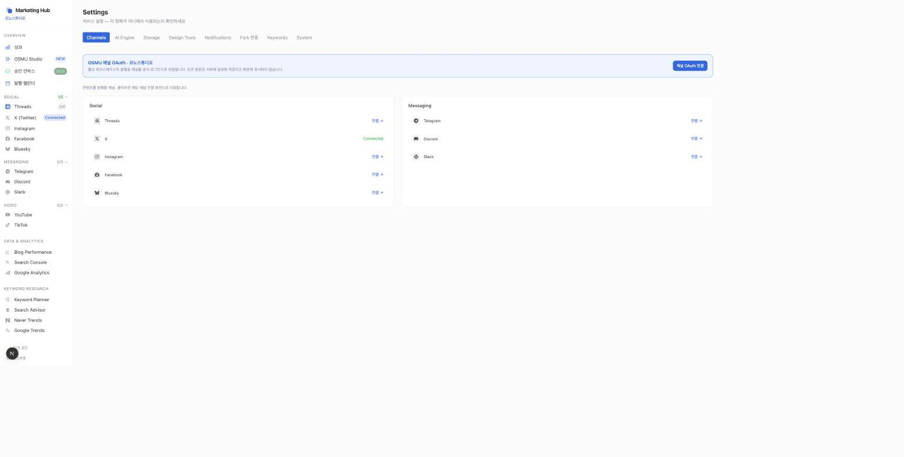
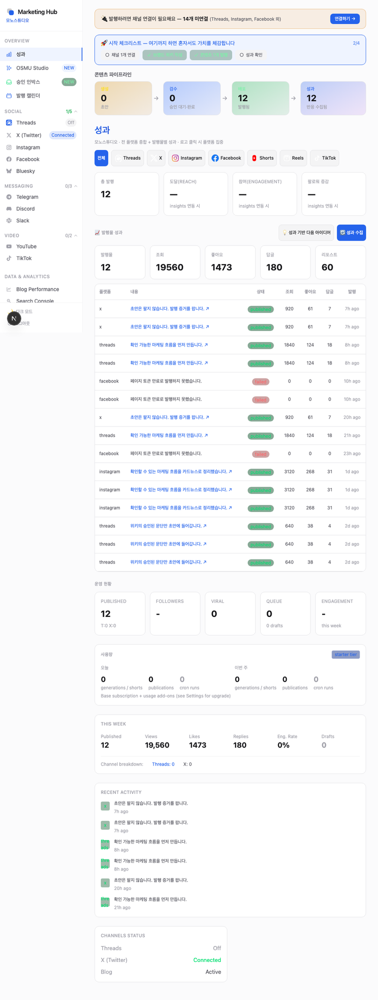
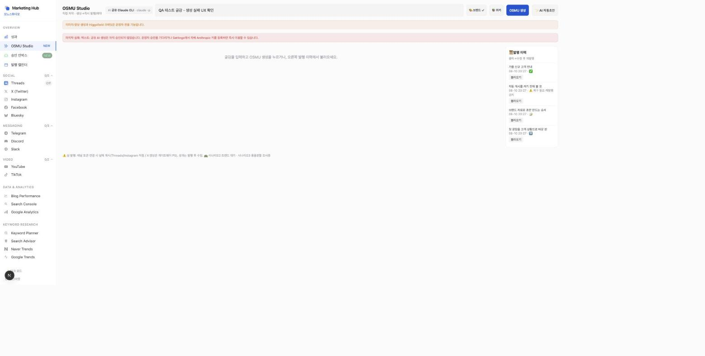
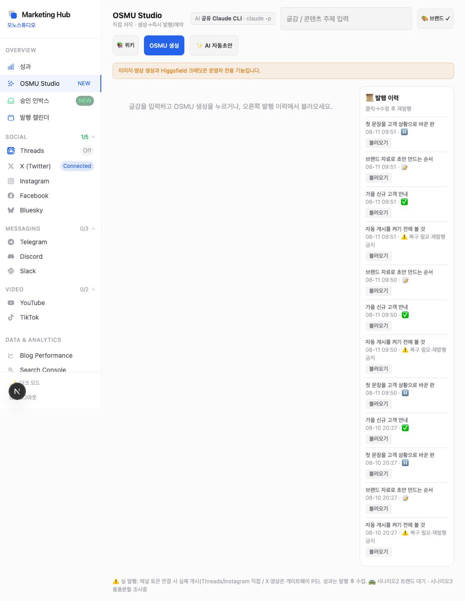
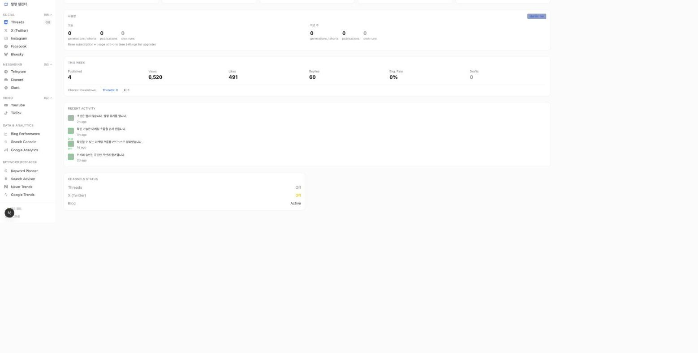
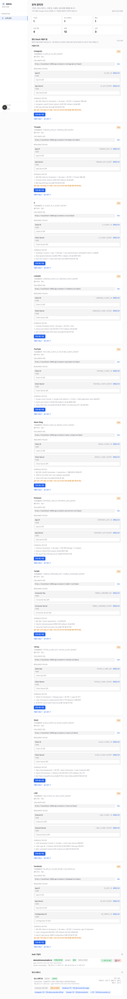

로그인 화면 자체는 정상 렌더. 다만 prod에서 GET /api/auth/google이 Supabase 환경변수(NEXT_PUBLIC_SUPABASE_URL 등) 미설정 시 500을 내고 화면엔 "일시적 오류입니다"만 뜬다. 코드 결함이 아니라 배포 env 블로커 + 실패 카피가 원인을 안 알려주는 UX 결함.
login/page.tsx 에러 문구를 "일시적 오류" → 원인+다음행동 안내로 교체.

연결 상태를 화면마다 다른 소스에서 읽는다: 사이드바·배너는 레거시 channel-config 크리덴셜, Settings 본문·채널 페이지는 신규 channel_accounts OAuth 레코드. 그래서 동일 테넌트에 "연결됨"과 "미연결"이 동시에 표시됨. R-06 회장 발화("API키 등록·승인 과정을 다 없애준다")와 정면 충돌.
참조: settings page.tsx Channels 탭 · lib/verify-channel.ts · channel_accounts 조회 경로
channel_accounts(OAuth) 하나로 수렴. 사이드바 뱃지·상단 "N개 미연결" 배너·Settings 본문이 같은 헬퍼(isChannelConnected(tenant, ch))를 호출.
/api/overview · /api/usage · /api/metrics 전부 정상.
studio/page.tsx의 runOSMU()/genText()가 apiPost 403(shared_ai_approval_required)에서 throw하는데 catch가 없어 화면 무반응(콘솔에만 403). 사용자는 왜 아무 일도 안 일어나는지 몰랐음.
lastError 배너로 원인+다음행동 노출.
드래프트 편집 게이트 {!text && ...} (studio/page.tsx:484 부근)는 정상 조건분기. 문제는 /api/studio/drafts 응답 4건이 전부 text: null — 시드가 아이디어(idea)만 넣고 본문 페이로드를 안 채움. 그래서 불러와도 편집할 본문이 없다. R-09 "미리보기 사라짐"과 별개인 seed 데이터 갭.
text/플랫폼별 variant)을 실제로 채운다(현재 idea만 저장되는 경로 점검). 데모 seed 1건에 본문 주입.Publish 버튼은 {text && <Button Publish/>} 조건부 렌더 — 본문(text)이 채워져야 나타난다. R-02-e의 seed 갭 때문에 버튼 자체가 안 뜬다. 발행 코드(카드별 publish/재시도/예약)는 존재하며 v12 DESIGN.md의 CardPublishControl 계약대로 설계돼 있음.

홈 page.tsx가 성과 지표를 4개 소스·4개 패널로 각각 렌더(성과 카드 / 발행물 성과 / 운영 현황 / THIS WEEK). 일부는 실데이터, 일부는 0/"—"라 같은 화면에서 숫자가 상충해 보인다. 벤치마크: SaaS 대시보드는 "결정에 쓰는 소수 지표만, 맥락과 함께" (아래 출처).

기능은 정상 작동(가입자·워크스페이스·OAuth 크리덴셜 렌더, 전 턴 500은 DB 연결로 해소). 다만 14개 플랫폼 폼을 전부 펼쳐 놔 정보 밀도 과다·여백 불균일 — R-09 지적의 실물.